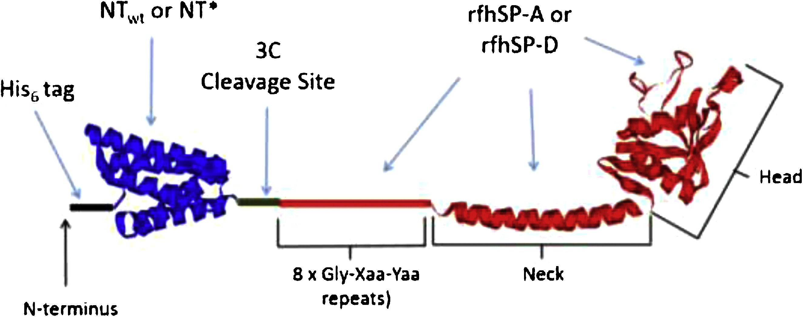

Vadim Demichev, Punkus Tober-Lau, Tatiana Nazarenko, Oliver Lemke, Simran Kaur Aulakh, Harry Whitwell, et al.
Tatiana Nazarenko, Harry J. Whitwell, Oleg Blyuss, Alexey Zaikin
Vadim Demichev, Punkus Tober-Lau, Oliver Lemke, Tatiana Nazarenko, Charlotte Thibeault, Harry Whitwell, et al.
Tatiana Nazarenko, Oleg Blyuss, Harry Whitwell, Alexey Zaikin
Pramod Shinde, Harry J. Whitwell, Rahul Verma, Mikhail Ivanchenko, Alexey Zaiking, Sarika Jalan
Roberto Di Blasi, Oleg Blyuss, John F. Timms, Daniel Conole, Francsca Ceroni and Harry J. Whitwell
Harry J Whitwell, Maria Giulia Bacalini, Oleg Blyuss, Shangbin Chen, Paolo Garagnani, Susan Yu Gordleeva, Sarika Jalan, Mikhail Ivanchenko, Oleg Kanakov, Valentina Kustikova, Ines P Mariño, Iosif Meyerov, Ekkehard Ullner, Claudio Franceschi, Alexey Zaikin

Alastair Watson, Girth L Sørensen, Uffe Holmskov, Harry J Whitwell, Jens Madsen, Howard Clark
Harry J. Whitwell, Jenny Worthington, Oleg Blyuss, Aleksandra Gentry-Maharaj, Andy Ryan, Richard Gunu, Jatinderpal Kalsi, Usha Menon, Ian Jacobs, Alexey Zaikin & John F. Timms
Longitudinal algorithm for the early diagnosis of Ovarian Cancer
Harry J. Whitwell, Oleg Blyuss, Usha Menon, John F. Timms and Alexey Zaikin
We developed parenclitic networks to include categorical markers and use the topological features of the networks to predict ovarian cancer.
Joy Cuenco, Natascha Wehnert, Oleg Blyuss, Anna Kazarian, Harry J. Whitwell, Usha Menon, Anne Dawnay, Michael P. Manns, Stephen P. Pereira and John F. Timms
Kathryn Wolhuter, Harry J. Whitwell, Christopher H. Switzer, Joseph R. Burgoyne, John F. Timms, Philip Eaton
Shibu Krishnan, Harry J. Whitwell, Joy Cuenco, Aleksandra Gentry-Maharaj, Usha Menon,Stephen P. Pereira, Marco Gaspari and John F. Timms
Harry Whitwell, Rose-Marie Mackay, Christine Elgy, Cliff Morgan, Mark Griffiths, Howard Clark, Paul Skipp & Jens Madsen
Sumaiyya Thawer, Jennifer Auret, Corinna Schnoeller, Alisha Chetty, Katherine Smith, Matthew Darby, Luke Roberts, Rosie-Marie Mackay, Harry J. Whitwell, John F. Timms, Jens Madsen, Murray E. Selkirk, Frank Brombacher, Howard William Clark, William G. C. Horsnell
Michaela Kendall, Nikolas J. Hodges, Harry Whitwell, Jess Tyrrell and Hakan Cangul
Zofi McKenzie, Michaela Kendall, Rose-Marie Mackay, Harry Whitwell, Christine Elgy, Ping Ding, Sumeet Mahajan, Cliff Morgan, Mark Griffiths, Howard Clark & Jens Madsen